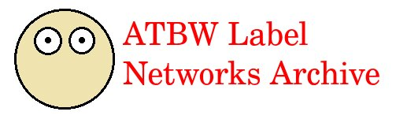

<!DOCTYPE html
   PUBLIC "-//W3C//DTD XHTML 1.0 Transitional//EN"
   "http://www.w3.org/TR/xhtml1/DTD/xhtml1-transitional.dtd">

<html xmlns="http://www.w3.org/1999/xhtml" xml:lang="en" lang="en">
<head>
<link rel="icon" href="favicon.ico" type="image/x-icon">
<meta http-equiv="Content-Type" content="text/html;charset=utf-8" />
<title>Home - ATBW Official</title>
    <style>
        body {
            font-family: Arial, sans-serif;
            background-color: #f4f4f4;
            margin: 0;
            padding: 20px;
        }
        h1 {
            text-align: center;
            margin-bottom: 40px;
        }
        .gallery {
            display: flex;
            flex-wrap: wrap;
            justify-content: center;
        }
        .video-container {
            margin: 15px;
            text-align: center;
        }
        video {
            width: 300px;
            height: auto;
            border: 2px solid #ccc;
            border-radius: 10px;
        }
        .caption {
            margin-top: 10px;
            font-size: 16px;
            color: #555;
        }
    </style>
</head>

<body>
<table align="center">
</body>
</html>

<table align="center">
<tr>
<td></td>
</tr>
</table>

<table width="70%" align="center">
<tr align="center">
<td width="25%"><a href="index.html">Home</a></td>
<td width="1%">|</td>
<td width="25%"><a href="series.html">Series</a></td>
<td width="1%">|</td>
<td width="25%"><a href="miscellaneous.html">Miscellaneous</a></td>
<td width="1%">|</td>
<td width="25%"><a href="about.html">About</a></td>
</tr>
</table>

<hr>
This page was created to host the ATBW series that was removed from YouTube in 2025 (except for the 2014 ATBW Super 8 episode that is still on YouTube as of writing. The initial episode of the ATBW series aired in 2013, and remakes followed in 2017 and 2019, the latter of which being a full remake of the entire 2013 series. This website was created on February 1, 2026.

<br>
<br>


<table border="5" cellspacing="2" cellpadding="5" width="75%" align="center">
<tr>
<th rowspan="1" width="20%" bgcolor="#FF0000">
<font color="white"><b>BE WARNED!! MOST OF THE MEDIA ON THIS SITE IS QUITE CRINGY AND/OR ANNOYING AS THEY WERE MADE FROM WHEN I WAS MUCH YOUNGER. BY WATCHING VIDEOS ON HERE YOU ARE WATCHING THEM AT YOUR OWN RISK. SOME VIDEOS ARE ALSO POTENTIALLY DISTURBING FOR CERTAIN VIEWERS. YOU HAVE BEEN WARNED.</b></font>
</td>
</table>
<br>
<br>
<table border="2" cellspacing="2" cellpadding="5" width="75%" align="center">
<tr>
<th rowspan="1" width="50%" bgcolor="#FFFFFF">
<h1>Welcome!</h1>
<font color="red">You can search for each of the three series in the series tab, or you can look for miscellaneous videos in the miscellaneous files.</font>
<hr>
<h2>Get Started</h2>
<ul align="left">
<li><a href="2013series.html" style="color: black">2013 Series, The original series</a></li>
<br>
<li><a href="2017series.html" style="color: black">2017 Series, The remake of three episodes</a></li>
<br>
<li><a href="2019series.html" style="color: black">2019 Series, The remake of the entire series</a></li>
<br>
<li><a href="miscellaneous.html" style="color: black">Miscellaneous, Unrelated but still related media</a></li>
</ul>
</td>
</table>
<br>
<hr>
<font size="5">This website was made to preserve the legacy of the ATBW series from the 2010's, which was mostly erased from YouTube in 2025. The decision to erase this content was not taken lightly and as such, this site was launched.</font>
<br>


Amory The Bad Woman Freightliner Fun (2012)


